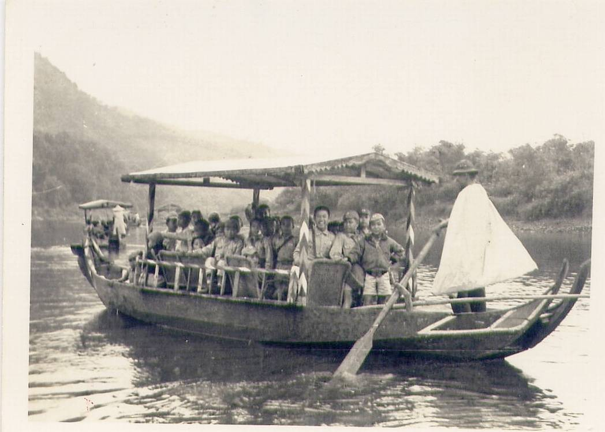

碧潭畔的清涼往事：新店老街「195綿綿冰」與家族奮鬥史
採訪者： 侯淑敏（浩痴居）
受訪者： 張小姐（「195綿綿冰」店負責人）
採訪地點： 新店路 195 號店鋪
前言：老街上的一抹清甜
走進新店路，這條曾是新店最繁華的舊街，空氣中瀰漫著一種歲月靜好的緩慢感。在 195 號的店門口，我遇見了正在忙碌的張小姐。這裡不賣現今流行的華麗冰淇淋，而是賣著傳承二十多年、純手工製作的綿綿冰。隨意拉開話匣子，張小姐對這條街的記憶，就像她家的冰一樣，清爽而深厚。
一、 從小弟到姐夫：一台冰淇淋機串起的家族情
浩痴居： 張小姐，這間冰店看起來很有歷史了，當初是怎麼開始賣冰的呢？
張小姐： 說起這間店，已經賣 20 幾年了。最早是我小弟開始賣的，後來小弟搬出去住，就換我姐夫接手製冰。我們的冰很有特色，吃起來很清爽，因為全都是我們自己做的。
浩痴居： 自己做？是在店面後面操作嗎？
張小姐： 對啊，就在我們家後面做。我們家後面有機器，有專門的冰淇淋機。我姐夫以前一到五都要上班，只有假日才過來幫忙，現在則是由他負責製作。我們夏天、秋天都賣，一年 365 天都沒有休息。雖然夏天生意比較忙，但我們賣了 20 幾年，早就習慣這種節奏了。
二、 地理環境的縮影與變遷
浩痴居： 張小姐，這條新店路（新店舊街）這幾十年來的變化一定很大，妳觀察到的環境變遷主要有哪些？
張小姐： 我把這裡的變化分成幾個部分來說：
道路的拓寬與改建： 以前這條路較窄，大約只有四到八米寬（現在是12公尺），是後來因為要蓋捷運才拓寬的。房子的正門門面為了配合工程硬生生往後退。
居住空間的演進： 我們家這棟房子是爸爸當年向阿媽（阿嬤）借錢買下的。那時候只有兩層半，卻住了我們全家 11 口人，包括阿公、阿媽、爸爸、媽媽和我們七個兄弟姊妹。現在雖然改建了，但那種大家庭擠在一起的記憶很深刻。
水溝環境的爭議： 關於這條街的圳溝（指大坪林圳圳溝），隔壁明光文具行老奶奶說以前很乾淨、有魚，甚至可以游泳，但我從小學三、四年前搬來基隆之後，印象中水溝就是臭的了，這點大家記憶似乎不太一樣。
與碧潭的距離： 我們家離碧潭非常近，後門出去就是堤防，從三、四樓窗戶就能直接看到吊橋（颱風時搖晃得更厲害）。以前吊橋搖晃得很厲害，人走在上面像螞蟻一樣。
三、 鄰里故事：消失與留下的老店
浩痴居： 老街上的店鋪換了一輪又一輪，有哪些店是妳特別有印象的？
張小姐： 這裡的每一間店都有自己的故事：
三峽黑豬肉店： 這家店目前由第二代媳婦經營。我媽對這家的豬肉情有獨鍾，特別是排骨，她覺得別家的排骨就是沒這家好吃，因為三峽的豬肉油脂比例比較剛好。這條街很有趣，很多店最後都是媳婦在堅持經營。
已結束經營的「萬元種子店」： 這間店以前在我家與文具店中間。最早是賣魚跟賣肉的合租，後來變成賣種子和已經種好的菜苗。這家店由第二代的女兒接手後，因為每天要去載貨太辛苦，加上子女都還在讀書沒辦法幫忙，經營兩年多後就收起來了。
90歲阿嬤顧的「明光文具行」： 這位阿嬤雖然高齡 90 歲，但頭腦非常清楚，什麼事情都記得。我們常去那裡買收據或雜項，阿嬤都會很熱心地招呼。
下午4點才開門的老雜貨店： 這也是一間很有個性的老店，目前也是傳到第二代，每天下午四點準時開門，維持著自己的步調，專賣給下班的人潮。
四、 碧潭獨有的「木船泡茶」文化
浩痴居： 妳之前提到過「大船泡茶」（遮棚茶船），這在當時是很有名的活動嗎？
張小姐： 對，那是早年碧潭的一大特色。那時候沒有現在這種天鵝腳踏船，全是木頭做的划槳船。當時有一種「大船」，船上擺了椅子，船家會提供茶具讓客人在船上邊划邊泡茶。我記得國中時，坐一趟大約要 500 到 600 元台幣，這在當時算很貴的消費。通常是有親戚來訪時，我媽才會出錢請他們坐大船繞一圈，那是很體面的招待。
河邊那時候還有退伍老兵（老芋頭）在那裡泡茶聊天，大家都很熟，氣氛與現在完全不同。

五、 父親的經營哲學：隨緣與堅持
浩痴居： 妳們的冰店二十年才漲十塊錢，這是不是也受到長輩觀念的影響？
張小姐： 沒錯，這完全是受我父親影響。我爸的經營觀念就是兩個字：「隨緣」。他常說，如果人家想在我們店門口擺攤，稍微擋到路也沒關係，「擺就擺嘛，要買的人自然會來買，不想買的人，你裝潢得再漂亮也沒用」。這種不與人爭、厚道待人的態度，深深影響了我們。因為我們用的是自己的房子，沒有租金壓力，所以我們堅持自己人工製作、自己顧店。二十幾年前一客賣 30 元，現在才賣 40 元，網路上很多人說太便宜了，但我們覺得能維持生活、服務老鄰居就好。對我們來說，這間冰店賣的不只是清涼，還有父親留下來的那份處世智慧。
浩痴居： 這就是老街的人情味吧。我看妳與鄰居聊天都好親切。
張小姐： 這條街就是這樣，大家都是老鄰居。我父親以前常說，人家要在我們店門口擺攤，擋到路也沒關係，隨緣啦，要買的人自然會來買。雖然現在老街不像以前那麼熱鬧，很多店像萬元種子店都收了，但我們還是在這裡守著。
浩痴居： 謝謝張小姐今天跟我分享這麼多故事。下次路過，我一定要再來吃一杯清爽的綿綿冰。
張小姐： 沒問題，隨時歡迎！
採訪後記：
聽著張小姐講述父親的「隨緣」哲學，再看著她遞給客人的那碗綿綿冰，我突然明白，為什麼這間店能在變遷劇烈的老街中屹立二十年？在對談過程中，她那不易察覺、偶而淺淺流露的溫和笑容，我發現 195 綿綿冰不只是一間冰店，它承載了一個 11 口之家的奮鬥史，也見證了新店老街從燒臘香味到清甜冰霜的轉變。那種「二十年才漲十塊」的堅持，或許就是這條舊街在現代化浪潮中，最珍貴的人情底色。
採訪後特記1：
根據張小姐的描述，「大船泡茶」（遮棚茶船）確實是早年碧潭相當具代表性的觀光文化，與現在常見的腳踏船（天鵝船）活動大不相同。這種文化的具體細節如下：
船隻設施與服務： 當時使用的是一種非常大條的木造船（遮棚茶船），船上設有椅子供客人坐，並提供茶具與茶葉讓客人在船上邊划邊泡茶，或是由船家泡好給客人喝。
遊湖方式： 與現在遊客自己踩踏或劃船不同，當時的大船是由船家親自劃船，載著客人在碧潭「繞一圈」欣賞風景。
消費水平： 這在當時屬於較高檔的消費。張小姐回憶，大約在她國中時期，坐一趟大船的費用約為 500 至 600 元台幣，這在當時是一筆不小的金額。
社交意義： 這種活動常被當作招待親友的方式。張小姐提到，以前家裡有親戚來訪時，她的母親會特別出錢請客，讓親戚搭乘大船遊潭。
張小姐也強調，以前的碧潭並沒有現在這種腳踏船，全是木頭做的劃槳船。這種「大船泡茶」的景象如今已成為老一輩新店人的深刻回憶。
採訪後特記2：
根據來源內容與訪談紀錄，新店老街（新店路）在因應捷運施工而進行道路拓寬前後，其居住與生活環境產生了顯著的差異，主要體現在道路空間、建築型態、商業模式及河岸景觀四個面向：
1. 道路空間與建築型態的轉變
道路寬度： 拓寬前的新店路非常狹窄，寬度僅約 4 至 8 米，屬於較窄的小徑。拓寬後道路變寬，並改為單行道。
房屋退縮與改建： 為了配合拓寬工程，老街上的房舍必須「往後退」，許多老居民曾親眼目睹自家房舍為了留出路面空間而向後移動。
居住密度： 早期老街房舍（如 195 號）多為 兩層半 的建築，居住空間狹小。張小姐回憶當時一家 11 口人（包括阿公阿媽、父母與 7 個小孩）擠在兩層半的空間內，生活非常緊密。拓寬工程後，許多房舍才陸續改建為現今較高的建築。
2. 商業模式與空間利用
攤位擺設： 早期法規與空間限制較少，店家可以將貨物與攤位擺放在門口外側，使得街道雖然狹窄但商業活動緊鄰路邊，非常熱鬧。
經營環境： 隨著道路拓寬，店家被要求將攤位往屋內移。空間的改變也影響了生意，例如原本在 195 號旁賣魚、賣肉的店家，在移往室內後生意受到影響，最終因經營困難或無人接手而陸續收攤（如萬元種子店）。
3. 水文與排水環境
水溝整潔度： 關於排水溝（原為大坪林圳圳溝）的記憶在不同世代間有差異。老一輩的居民（張小姐的鄰居明光文具行老奶奶）記憶中，早期的水溝非常乾淨，有魚且可以游泳；但張小姐提到自她小學三、四年前搬來基隆之後，印象中水溝就是臭的了，這點大家記憶似乎不太一樣。
河岸景觀： 以前碧潭河邊佈滿了大石頭，並使用鐵網包裹石頭以防止沖刷。當時河邊常有退伍的老兵（老芋頭）聚在一起泡茶，生活氣息濃厚，與現在規劃整齊的觀光景觀不同。
4. 碧潭遊船文化的更迭
遊船型態： 早期碧潭流行的是木造大船，船上有椅子，遊客可以一邊劃船一邊泡茶，並由船家親自劃船載客遊潭（繞一圈費用約 500-600 元）。
現代轉變： 現在碧潭則是以天鵝型狀的腳踏船為主流，且多由遊客自行操作，早年的木船泡茶文化已逐漸消失，僅存極少數木船供船家自用。
總結來說，拓寬前的新店老街空間雖然侷促，但生活與鄰里互動緊密；拓寬後雖然道路變得開闊且建物更新，但也隨著時代變遷使許多具代表性的老店與河岸特有文化隨之沒入歷史。
採訪後特記3：
根據來源內容，這間雜貨店位於新店路（新店舊街），是當地少數依舊留存下來的老字號店鋪。關於這間店的特別故事與背景如下：
家族傳承的老店：這是一間名副其實的「老的老店」，目前已經傳承到了第二代在經營。
獨特的經營步調：該店最特別的地方在於其營業時間，每天固定要到下午 4 點才會開門。
老街變遷的見證：在張小姐的描述中，新店路（舊街）許多昔日的老店（例如萬元種子店、賣魚賣肉的攤位）都已經因為後繼無人或經營辛苦而陸續結束營業，而這間雜貨店與張小姐家的冰店一樣，是少數撐過時間洪流、至今仍有開門營業的老店。訪談中雖然張小姐輕輕點出為何固定下午 4 點才開門，但這間店在她眼中，是這條老街上具代表性且少數「還有東西可看」的老店之一。
採訪後特記4：
根據來源內容，新店路（舊街）上「女力當家」的現象確實相當普遍，張小姐在訪談中多次提到老街上的店鋪多由女性支撐經營，這不僅是一種偶然，更形成了一種特殊的鄰里生態。以下是來源中提到的具體實例與原因：
三峽黑豬肉店： 這是老街上非常具代表性的例子。該店原先是公公在經營，退休後傳給兒子與媳婦，但張小姐觀察到「到後面都是媳婦在賣」，兒子反而不太愛參與店面工作。目前該店也是由第二代的「大媳婦」在負責。
195 綿綿冰（張小姐家）： 張小姐家的店鋪也呈現類似的模式。她提到家裡的男生大多在外上班或是待在後頭負責製作（如姐夫負責操作冰淇淋機），而「前面顧店的都是女生」，所有的女性成員都要負責第一線的操作與銷售。
萬元種子店（已歇業）： 這間原本位於肉鬆店與文具店中間的老店，在第一代母親過世後，也是由「第二代的女兒」接手經營。雖然最終因為體力負荷（每天要親自載貨）與子女尚在就學無法幫忙而收攤，但其經營權的傳承也是以女性為主。
明光文具行： 該店目前仍由一位 90 歲的阿嬤 獨自看管。張小姐形容阿嬤頭腦非常清楚，鄰居去買收據或雜項時，都是由阿嬤親自熱心招待。
為什麼會出現這種現象？張小姐在訪談中分享了她的觀察與感慨：
男女性格與興趣差異： 她發現老街很多店鋪雖然傳給兒子，但「兒子都不太愛做」，或是選擇出外尋找其他工作（如上班）。
女性的韌性與堅守： 相對於男性，老街上的女性（無論是媳婦或女兒）展現了更強的堅持。張小姐感嘆地說：「好奇怪，很多都是女生傳給兒子，兒子都不太愛做... 好像都還是女人比較堅持。」
總結來說，這種「女力當家」的現象反映了當時老街店鋪經營的常態：男性成員可能負責生產技術或尋求外在薪資收入，而女性則成為守護家業、維持鄰里互動與店面營運的核心力量。